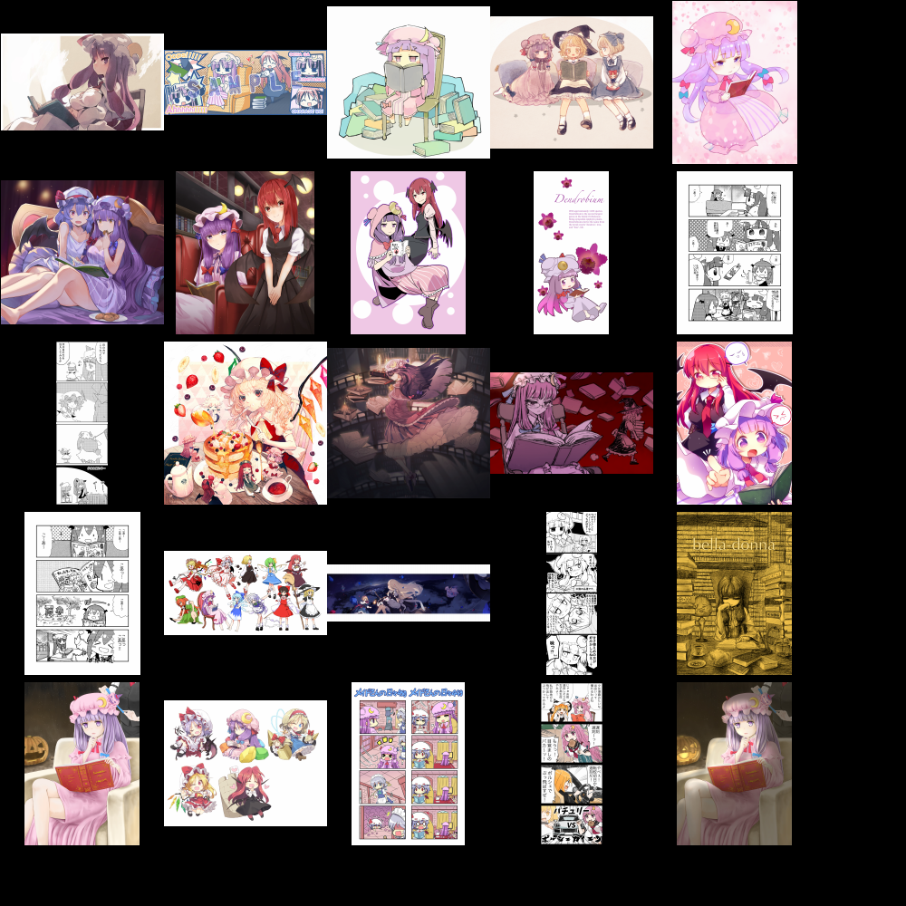

Booru Sites
Sites such as Danbooru and Gelbooru, which run imageboard software, hosting (primarily) anime artwork organised by tags. The imageboard software provides a RESTful API allowing other programs to make HTTP requests and access the imageboard’s resources.
Motivation
There are already quite a few programs out there that do this, but for a few reasons I decided to reinvent the wheel and create this program anyway:
- I’d like a very simple program for this purpose that does what I want and nothing unnecessary (I don’t need to upload or edit posts)
- It’s a pretty easy project to work on in a new language, and I wanted to start learning Go in a hands on way, without working on something overly difficult for a beginner
You can find the source code here.
Implementation
Steps
As mentioned, the program just focuses on retrieving post and tag data, which were the content from these booru sites I was concerned with. The core functionality boils down to a few steps, for either post or tag searches:
- Encode a URL for a search with the necessary query parameters
- Make a HTTP GET request with that URL
- Parse the JSON response
- Do something with it (display it, make another request with the image URL to download the image)
All three of the APIs I’ve implemented support for take mostly the same query parameters, with a few exceptions, such as gelbooru using XML by default (I preferred to have all APIs return JSON responses). Gelbooru semi-optionally requires authentication (occasionally throttles requests otherwise), so I added configuration file support, so that API key and user ID values can be stored persistently, which I preferred over including them in the command line flags.
The concurrent image downloading via goroutines is based off an example from the book The Go Programming Language, which I am currently reading. I would recommend this book to anyone learning the language. I plan to take a more in-depth look into the goroutine approach to concurrency soon, which I might write a post about.
Interface
The program is separated into two Go modules: backend, which handles most of the functionality of the program, and cmd, which provides a command line frontend to that functionality. I was attracted to the prospect of using the Cobra library, which seemed like a nice way of creating a command line interface.
Image Thumbnail Browser

While creating this program, I also worked on a very simple shell script wrapper around the feh image viewer, for quickly viewing my downloaded images.
Features
- Thumbnail size changes dynamically depending on number of images
- Minimalistic interface with no text, unlike the default view
- Support for a few actions on images (copying to clipboard, deletion, moving to a directory of choice). These require some extra scripts I’ve made along with some other shell utilities
Limitations
Feh doesn’t support animated gifs, webms, videos, etc. Mpv would be a good option to handle those cases.
Script
It felt natural to write this as a shell script given that it’s just a wrapper over a shell application, however the implementation was quite ugly. In most other languages calculating things like ceilings and square roots of numbers is much more elegant. Additionally, the blank font trick is a bit of a hack, but unfortunately there doesn’t seem to be another way of disabling the filename text for thumbnails in feh.
#!/bin/sh
# requires bc utility as well as the feh image viewer
# key actions (makes use of other scripts)
# 1 key -> copy image to clipboard
# 2 key -> delete image
# 3 key -> move image
sqrt() {
echo "scale=2; sqrt($1)" | bc
}
ceil() {
awk 'function ceil(x) {
return (x == int(x)) ? x : int(x)+1
} {
printf "%d\n", ceil($1)
}'
}
# number of image files -> number of rows
get_grid_rows() {
sqrt $1 | ceil
}
# blank/no font: use adobe-blank font or similar
# fallback to any truetype font with size of 0 (will still be slightly visible)
BLANK_FONT="/usr/share/fonts/adobe-blank/AdobeBlank.ttf"
if [[ "$(ls -A $BLANK_FONT)" ]]; then
FONT="$BLANK_FONT/0"
else
FONT="$(find /usr/share/fonts -iname '*.ttf' | head -n 1)/0"
fi
# define image grid dimensions
NUM_FILES="$(find "$1" -type f -iregex '.*\.\(jpg\|gif\|png\|jpeg\)$' | wc -l)"
NUM_ROWS=$(get_grid_rows $NUM_FILES)
WIDTH=1000
HEIGHT=1000
OFFSET=100
THUMB_WIDTH=$((($WIDTH - $OFFSET) / $NUM_ROWS))
THUMB_HEIGHT=$THUMB_WIDTH
if [[ -z "$(ls -A $1)" ]]; then
echo "No files found."
exit 1
fi
printf "Files: %s\n" $NUM_FILES
printf "Grid size: %sx%s\n" $WIDTH $HEIGHT
printf "Thumbnail size: %sx%s\n\n" $THUMB_WIDTH $THUMB_HEIGHT
feh --thumbnails \
--recursive \
--quiet \
--thumb-width $THUMB_WIDTH \
--thumb-height $THUMB_HEIGHT \
--limit-width $WIDTH \
--limit-height $HEIGHT \
--geometry $WIDTHx$HEIGHT \
--font $FONT \
--action1 "imgclip '%f'" \
--action2 "rm '%f'" \
--action3 'rofi-mv "%f"' \
"$1"
exit 0